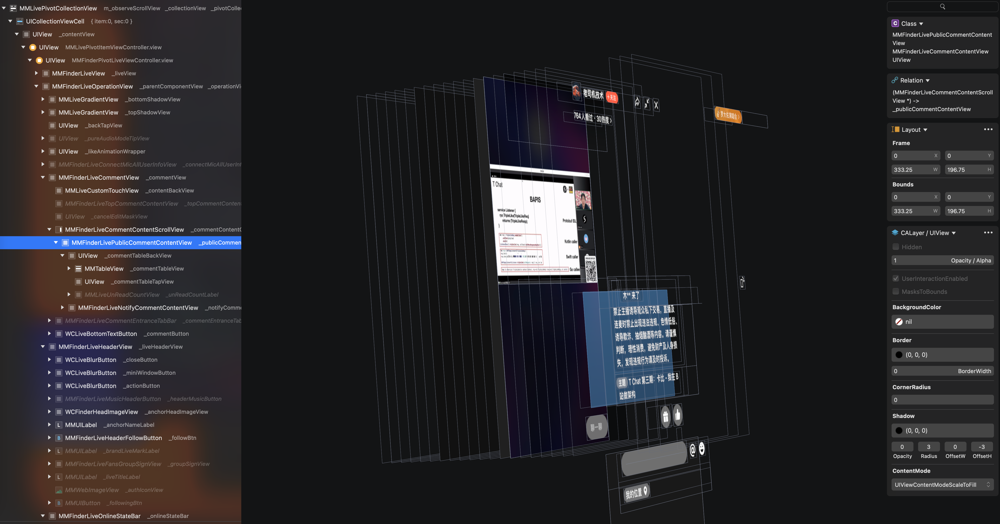

全屏Feed ScrollView嵌套时滑动问题
最近在做类似抖音全屏视频Feed的需求,然后其中需要展示最新的部分评论,类似于直播中的评论列表.然后就理所当然的外面是一个UICollectionView, cell里面再嵌套UICollectionView
- 从上面视频可以看出, 内层的
UICollectionView在其顶部或者底部滑动时会直接响应外层的UICollectionView, 也就导致内层的UICollectionView失去了bounces效果 - 同时内层
UICollectionView在滑动还会修改外层UICollectionView滑动
解决方案1,经过群友C指点
- 首先解决在内层
UICollectionView区域触发滑动时不让外层UICollectionView响应, 子类化外层UICollectionView, 重写-gestureRecognizerShouldBegin:
@interface ExternalCollectionView : UICollectionView
@end
@implementation ExternalCollectionView
- (BOOL)gestureRecognizerShouldBegin:(UIGestureRecognizer *)gestureRecognizer {
CGPoint location = [gestureRecognizer locationInView:self];
UIView *hitView = [self hitTest:location withEvent:nil];
while (hitView != nil) {
if (hitView == self) {
break;
}
if ([hitView isKindOfClass:UIScrollView.class]) {
return NO;
}
hitView = [hitView superview];
}
return [super gestureRecognizerShouldBegin:gestureRecognizer];
}
@end
- 解决内层,同样子类化内层
UICollectionView
@interface InnerCustomCollectionView : UICollectionView
@end
@implementation InnerCustomCollectionView
// 私有API
- (UIScrollView *)_containingScrollView {
// 当出现嵌套时,内层滑动到底或者到顶时,会修改外层的 contentOffset, 从而内层的也就失去了 bounces 效果
return nil;
}
@end
解决方案2, 逆向分析微信
- 通过
Lookin查看微信的视图层级, 可以看出也是cell里面嵌套,但微信不同的是嵌套不是两层,而是多了一层, 也就是在内层的IM外面又套了一层不能滑动的UIScrollView,然后就可以直接解决上面的两个问题,无需其他黑科技或者处理
